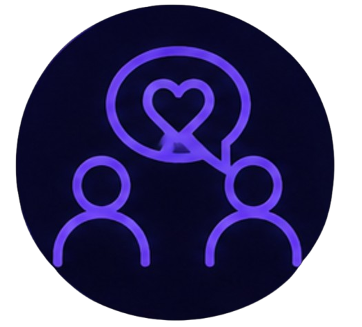
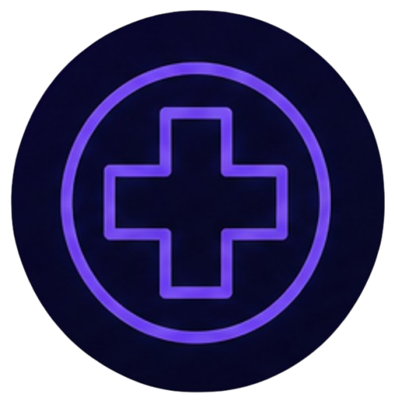

Contactos de apoyo en El Salvador
En momentos de dificultad emocional, contar con apoyo profesional puede marcar la diferencia. Estas líneas de ayuda en El Salvador ofrecen atención gratuita y confidencial para quienes la necesitan.

Línea de Apoyo Emocional
Línea gratuita de atención psicológica del Ministerio de Salud de El Salvador. Ofrece orientación y apoyo emocional en situaciones de crisis, ansiedad, depresión o duelo.
Visitar Ministerio de Salud →Instituto ISRA
Instituto Salvadoreño de Rehabilitación de Adicciones. Especializado en atención de adicciones y salud mental, incluyendo el uso problemático de redes sociales.
Visitar ISRA →
Cruz Roja Salvadoreña
Programas de apoyo psicosocial para personas en situaciones de vulnerabilidad. Ofrecen orientación y contención emocional en momentos de crisis.
Visitar Cruz Roja →Fundación Ayúdame
Organización dedicada a la prevención y atención de problemas de salud mental en jóvenes y adolescentes. Ofrecen terapias y talleres.
Visitar Fundación Ayúdame →Recuerda: Pedir ayuda es un acto de valentía y autocuidado. Estas líneas están aquí para escucharte sin juzgar. No estás solo.